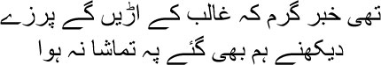

36

The rumours were rife—Ghalib would be torn apart
I went to watch too, but the show was cancelled
 ’m a writer of stories, Mirza sahib, but the court of official opinion had repeatedly convicted me as an obscene writer. At times, the Pakistan government dubbed me a communist and a suspicious character; at other times it awarded me the mantle of a great writer. Sometimes even the smallest opportunity for survival was snatched away from me, and sometimes I was given alms out of charity. On some occasions they said I was no one, an outsider; and then, when it suited them, they called me one of their own. But still it was obvious to me that I was nothing but an intruder to them, Mirza sahib; not just to the Pakistan government, but to any government, any power, I was only an outsider, a refugee. My entire life passed in this state. I asked myself over and over, who am I, then? Where do I belong? I never found my own place in Pakistan, Mirza sahib, although I kept looking for it frenziedly. And that was why I divided much of my time between the hospital and the lunatic asylum. Everyone spat on me. Manto! He’s nothing but a writer of obscenities, a pornographer. He drinks all day; he begs and borrows to pay for his drinks. And then he enters his hell to write his dirty stories.
’m a writer of stories, Mirza sahib, but the court of official opinion had repeatedly convicted me as an obscene writer. At times, the Pakistan government dubbed me a communist and a suspicious character; at other times it awarded me the mantle of a great writer. Sometimes even the smallest opportunity for survival was snatched away from me, and sometimes I was given alms out of charity. On some occasions they said I was no one, an outsider; and then, when it suited them, they called me one of their own. But still it was obvious to me that I was nothing but an intruder to them, Mirza sahib; not just to the Pakistan government, but to any government, any power, I was only an outsider, a refugee. My entire life passed in this state. I asked myself over and over, who am I, then? Where do I belong? I never found my own place in Pakistan, Mirza sahib, although I kept looking for it frenziedly. And that was why I divided much of my time between the hospital and the lunatic asylum. Everyone spat on me. Manto! He’s nothing but a writer of obscenities, a pornographer. He drinks all day; he begs and borrows to pay for his drinks. And then he enters his hell to write his dirty stories.
All this began much earlier, my brothers. The country had not been split into two yet. The uproar began immediately after the publication of my story ‘The Black Shalwar’. The Lahore Sessions Court had set me free on that occasion. Then charges of obscenity were levelled against ‘Smoke’. And ‘The Black Shalwar’ was also named along with ‘Smoke’ in the chargesheet. It was December, 1944. A detective police officer from Lahore asked me to report at the Goregaon Police Station. I was arrested as soon as I arrived. When I asked for the warrant an officer said, ‘We cannot show it to you.’
— Why not?
— Orders.
— You cannot arrest me without showing me the warrant.
— I cannot answer any of your questions, Mr Manto. We have instructions to despatch you directly to the court in Lahore.
I telephoned Hiralal, the lawyer, from the police station. I was released after he spoke to the officer. On the night of January 8, I was arrested again, this time at home. I did get out on bail, but I was told to appear in the court of the Special Magistrate of Lahore.
Ismat was arrested around the same time for her story ‘The Quilt’. She had to appear at the same court on the same day. I was quite amused by this, Mirza sahib. At least we would be able to relax and have some fun together in Lahore. I went to Ismat’s house with Shafia.
— You two have certainly started something. Patting me on the back, Shahid said, ‘Let’s celebrate. Ismat’s very upset.’
— But why?
— That’s what I said too. She now thinks she committed a big mistake by writing ‘The Quilt’.
— I never said that. Ismat snarled.
— Well then?
— This is too much harassment just for writing a story.
— I said the same thing to Manto sahib. Shafia said, ‘If you have to go to jail for writing a story, it’s best not to write such stories.’
— Listen to me, Ismat behen, such things happen very rarely in life.
— What do you mean? You seem to have won the Victoria Cross.
— Of course. The Queen has sent you and me summons to appear in court for writing stories. Can there be a greater honour?
— You can put the honour in your pipe and smoke it, Manto bhai. You love to consider yourself different from others in every respect.
— Don’t quarrel with me Ismat. Send for ice cream, Shahid. Can you imagine what a story you’ve written, Ismat? You can give yourself a thousand pats on the back. The Lahore trip will be great fun. You must come with us too, Shahid.
— Why should he go? Ismat scolded me.
— For heaven’s sake, you have no idea how beautiful Lahore is in winter. As they say, he who has not seen Lahore has not been born. Fried fish and whisky—it’s heaven, Shahid—red wine as warm as a lover’s kiss, can you imagine?
— Will you stop now, Manto sahib?
— Why, Shafia? Why should I stop? Am I a thief or a fraud? Actually the Queen wants us to visit Lahore on the pretext of justice.
All the arrangements were finalized for us to go to Lahore and appear in court. Hiralalji would represent both of us.
Ah, Lahore! The entire city was like the Sheesh Mahal, Mirza sahib, the palace of mirrors. No, actually Lahore was like the woman whose flashing eyes reflect a rainbow, who gambles with her fate, who wants to draw you into the fragrance in her breast. No sooner had we reached Lahore than the invitations began to pour in. I knew everyone here. But they wanted to meet Ismat. Who was this strange woman who had created such a commotion just by writing a story?
We had to appear in the court of the Special Magistrate Rai Sahib Sant Ram. We had appealed to be excused from regular appearances since it was a long way from Bombay to Lahore. Our plea was not even entertained. So we had to appeal to the High Court. We had to appear in Justice Achhuram’s court after this. We were astonished by what followed. After a long look at us, the judge said, ‘I read both your stories eagerly. I rather liked them.’ This was an unexpected gift. So we would be spared this time. But Achhuram had the case shifted to Deen Muhammad’s court. ‘Both of you are passing off profanities as literature,’ he told us through clenched teeth. He rejected our plea. I really was ill at the time, Mirza sahib. So I had taken the doctor’s recommendation along. Deen Muhammad sahib had had no choice but to excuse me from personal appearance.
I had presented my statement refuting the accusation of obscenity in no uncertain terms in the court of Rai Sahib Sant Ram. Your Honour, with your permission, I would like to say one or two things of my own. There is nothing in the relationship between men and women that can be termed obscene. Nothing written about this relationship can be vulgar. But when the relationship between two individuals is depicted only in terms of eighty-four sexual positions, then and only then does it become obscene. Stories and novels and poetry and sculpture must be considered after taking into account the motivation behind their creation. If the objective is unethical, we can certainly term it obscene. Sexuality does not amount to obscenity. If it did, the temples at Konark or Khajuraho should be demolished. No one is born with obscenity in his heart, my lord. The world at large labels things clean or vulgar. In my story ‘Smoke’, I have only tried to describe a specific situation. The sexual excitement that the father and mother in the story enjoy by pretending to be apart is seeded in their son Masood, who had unexpectedly seen the incident. I don’t know why this story is referred to as obscene. A sick mind will find obscenity in it. I have written my story for people with healthy minds. I am merely a writer, Your Lordship, don’t turn me into a pornographer.
Rai Sahib Sant Ram probably did not hear a word. Or, even if he did, he had taken his decision already. I was fined two hundred rupees. I took the money out of my pocket and handed it over immediately. Chuckling, Sant Ramji said, ‘So you came prepared?’
— What choice did I have?
But the fine was repealed on appeal.
Let’s postpone these accounts of courts and fines and contempt for some time, my brothers. I will never forget those heady days of style and splendour in Lahore. Such shaanshaukat. Except for the time we had to be present in court, Ismat, Shahid, and I would wander around the city in a tonga and shop. Ismat bought countless Kashmiri shawls and shoes. I was tempted to buy shoes. Every time we went to a shoe shop Ismat would look at my small feet and say, ‘Your feet make me envious, Manto bhai.’
— Don’t talk rubbish. It’s these feet I hate the most.
— But why?
— They’re just like women’s feet. Makes no sense. What on earth was the Lord doing! He fitted me with a woman’s feet by mistake.
— Do you despise women’s feet so much? I don’t see any lack of interest in women though.
— You misinterpret everything, Ismat. Why should I hate women’s feet? As a man, I like women. That doesn’t mean I want to be one.
— Cut this nonsense.
— You’re the one who starts the nonsense, then you ask me to cut it out. How do you tolerate her, Shahid?
Laughing, Shahid said, ‘You draw out all her poison, Manto. What remains for me is the nectar.’
Ismat said gravely, ‘Let’s drop the man-woman business and talk of human beings, Manto bhai.’
— Human beings? What’s that?
— Meaning?
— All I know is men and women. I don’t know any human beings.
— You’re playing the fool again. Ismat looked at me with wide eyes.
— I don’t care for the disembodied, Ismat.
— What do you mean?
— The term ‘human being’ is disembodied for me. I know of Shahid, of Ismat, of Shafia—some of them are women; others, men. The term ‘human being’ is fraudulent.
— Everything is fraudulent for you, isn’t it? Ismat shouted.
— You’re not a fraud, Ismat behen.
— Again?
— What?
— Must you use the word ‘behen’?
Shahid burst into laughter. —Go along with Manto’s game in this life, Ismat. You can wait for him in the next one.
I said without a smile, ‘Such serious women should not write stories, Shahid.’
Ismat didn’t respond. Much later she looked into my eyes. —What should I do then?
— Don’t make her angry again, Manto. Shahid ran his hand through Ismat’s hair fondly. —She’ll turn me into mincemeat after you leave.
— What was all that you were saying about feet, Ismat?
— Nothing.
— Here, have some almonds.
Ismat could never resist almonds. Taking a handful from me, she began to chew on them. A different Ismat emerged at once. —I didn’t pay any attention to what you had to say. Those who have beautiful feet are very intelligent and sensitive.
— Really? Then am I both intelligent and sensitive?
— I don’t know. Ismat shot back acidly. —My brother was. Azim Beg. He had very lovely feet. Just like girls’. They had swollen up so much when he died that I couldn’t look at them, Manto bhai.
It was impossible to tease Ismat after this. Azim Beg Chughtai had come between us, after all. Ismat turned to stone whenever his name came up. What a scoundrel he was to have escaped her. All her hurt over Azim Beg was written into ‘Dozakhi’.
Those were such happy days, Mirza sahib, those days in Lahore. We used to roam around the streets virtually the entire day. Anarkali Market, Shalimar Bagh, Noorjehan’s tomb. Mushairas, gossip, fried fish, kebab, chicken tikka. Watercolours from the old days were scattered all over Lahore. My salad days.
There was uproar once again as soon as my story ‘Blue’ was published. Apparently there couldn’t be a more obscene story. Moreover, the Christians were supposed to be very angry with me. In this story, Randhir had left a Christian woman for a dark-skinned lady of the night, the fragrance of whose body gave him the warmth of life. Ismat and I were on our way to Lahore again. Shahid was busy with his film; he couldn’t travel with us. The first hearing over ‘Blue’ began.
My lawyer asked, ‘Is this story of Manto sahib’s obscene?’
— Of course. This was the government’s reply.
— Which word is obscene?
— ‘Breast’.
— Is ‘breast’ an obscene word, your honour? I don’t think it is.
The government replied, ‘It isn’t. But in this case the reference is to a woman’s breasts.’
I couldn’t stay still anymore, Mirza sahib. Were court lawyers and clerks and government servants to determine the meaning of words? And would the man who lived with words in his waking hours and dreams and nightmares not be allowed to say anything? I leapt up, shouting, ‘Your Lordship, in my story the word “breast” is indeed used to refer to a woman’s breasts. Surely no one refers to them as “peanuts”.’
A wave of laughter ran around the court. I couldn’t stop laughing either, Mirza sahib. Had those who were sitting on judgment on me never seen breasts, never touched breasts, never pressed them or sucked them? Then why did they have all these objections to the word ‘breast’? I love breasts, Mirza sahib. How beautifully they are shaped, like a pair of seashells risen from the depths; the aroma of the desires of so many unknown and unnamed creatures is gathered in their bodies. I run my fingers over their warmth, I observe their loveliness. They are like two ornate temple towers. Sometimes they are transformed into two birds, and I discover a caressing touch in their feathers. I love the woman’s neck, her arms, the flower of her navel, her buttocks, her thighs. How dare you use the word ‘obscene’ for someone who has been endowed with such beauty by the Lord?
Judges are almost always sourpusses. Therefore this one announced, ‘If the accused repeats such behaviour, he will be held in contempt of court.’
I sat down. Bringing her lips close to my ears, Ismat said, ‘If breasts are obscene, why not the knee or the elbow?’
— Don’t pay any attention to this rubbish.
— Aren’t you going to say anything?
— What should I say?
— Are you going to listen to them tearing you apart without protesting?
— This is the writer’s fate, Ismat. Anyone can slice you up with a knife. You will have to listen to it all. Truth has never been able to speak up in this world.
— I will speak up.
— What will you say?
— In favour of ‘The Quilt’. I made no mistake.
— You must. Your words will echo around the courtroom. Never apologize, Ismat.
— What do you take me for, Manto bhai?
— Our spines cave in after repeated beatings, Ismat. We become helpless. I have decided to remain silent from now on. I have no other weapon besides silence.
That night Ismat suddenly asked me, ‘Why don’t you have the energy you once did, Manto bhai?’
What could I have told Ismat? Did she know that I was actually weak and impotent? I had presented myself to others as a raging bull simply in order to survive.
— I’m afraid of jail, Ismat.
— You’re afraid of jail?
— I’ve never told anyone of my fear, Ismat. Whom can I tell, after all? I can’t tell Shafia. She’s such a good, quiet girl. She already leads a harassed life because of me. My daily life is already like a prisoner’s, Ismat. If I’m put in jail on top of that, I won’t survive a minute.
— What’s the matter with you, Manto bhai?
— I’m so frightened, Ismat. I want to taste every morsel of this life. Let’s say I’m walking down the road and someone shoots me dead suddenly. That would make no difference. But I don’t want to die like a worm in a prison.
— Why must you think of such eventualities?
— My days are coming to an end, Ismat.
— Manto bhai! Ismat yelled. —What do you think of yourself? All you want is sympathy, isn’t it?
— Have you seen the spare wheel attached at the back of a car, Ismat? I’m that spare wheel.
— We’re sounding like Hindi film dialogue, Manto bhai.
I didn’t say anything more. I had no wish to argue. To myself I said, someone is indeed making a film with us in it, Ismat. Perhaps he will screen it for us on Judgement Day.